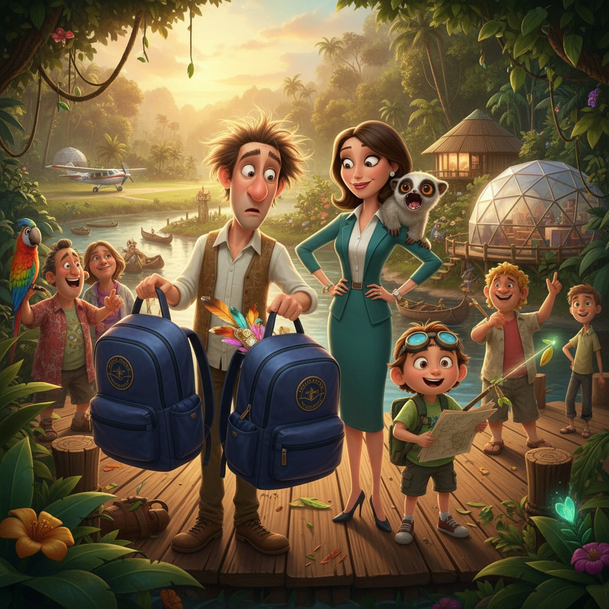

Семья Шепотливых была устроена по принципу солнечной системы: Эмилия являлась Солнцем — горячим, надёжным, вокруг которого всё вращалось, — а Аркадий был чем-то вроде блуждающей кометы, которая раз в несколько часов влетала в гостиную с восклицанием «А что, если тёмная энергия — это просто Вселенная, которая забыла выключить свет?» и снова исчезала в кабинете.
Дети унаследовали от родителей всё сразу и одновременно. Арина в свои четырнадцать читала словари исчезающих языков так, будто это детективы, и однажды за ужином спокойно заметила, что слово «рюкзак» в одном из диалектов острова Флорес означает «живот черепахи». Платону было семь, и он уже успел усовершенствовать тостер, модернизировать кошачий лоток (у них не было кошки, но это его не смутило) и доказать, что банановая кожура под правильным углом — это полноценная рогатка.
Звёздочка — лори с глазами размером с чайное блюдце — жил на правах полноправного члена семьи и считал своим долгом красть всё блестящее. Мобильники, серьги, монеты, однажды — маленький телескоп Аркадия. Кроме того, раз в неделю он издавал звук, который соседи сравнивали с пожарной сиреной, а Платон — с «криком динозавра, который забыл слова».
В общем, это была идеальная семья для приключений. Просто они об этом ещё не знали.
---
В аэропорту Манауса царил тот особый вид тропического хаоса, когда жарко, громко и все куда-то торопятся, но никто не знает куда. Эмилия стояла с распечатанным маршрутом в руках — четыре страницы, мелкий шрифт, цветные закладки — и методично отмечала пункты. Регистрация — галочка. Багаж — галочка. Лекарство для Звёздочки в кармашке рюкзака Аркадия — галочка, проверено лично.
Сам Аркадий стоял рядом с тёмно-синим рюкзаком, украшенным нашивкой «Галактический орешек» (подарок Платона на день рождения), и смотрел в потолок аэропорта с таким видом, будто там располагался вход в параллельное измерение.
— Аркаша, — сказала Эмилия, не отрывая взгляда от маршрута, — ты думаешь о работе.
— Я думаю о том, — ответил он мечтательно, — что если квантовая запутанность работает на уровне элементарных частиц, то теоретически два абсолютно одинаковых рюкзака могут быть связаны на субатомном уровне и—
— Папа, — перебила Арина, не отрываясь от «Грамматики языка чиксой», — это не так работает.
— Откуда ты знаешь? — обиделся Аркадий.
— Оттуда, — сказала Арина.
Платон в этот момент пытался научить Звёздочку делать вид, что тот — ручная кладь.
Маленький самолёт до курорта «Амазония Глэм» вылетал через двадцать минут. Эмилия организовала посадку с точностью швейцарских часов. Все заняли свои места. Рюкзак стоял у ног Аркадия. Звёздочка дремал в специальном переноске, прижимая к груди чужую серёжку.
---
Взлётно-посадочная полоса курорта была вырублена прямо в джунглях и выглядела так, будто лес на минуту расступился из вежливости. Пальмы смыкались над головой, пели невидимые птицы, и воздух был такой густой и живой, что казалось — его можно резать ложкой.
— Как красиво, — выдохнула Эмилия.
— Напоминает туманность Орла, — задумчиво сказал Аркадий. — Только влажнее.
— Папа, достань документы, — попросила Арина, — нас ждут на регистрации.
Аркадий расстегнул рюкзак. Покопался. Нахмурился. Покопался глубже. Достал на свет: пучок ярко-оранжевых перьев, маленький полевой бинокль, блокнот с записями вида «желтобровая тиранна, 14:32, ветка слева», три камня необычной формы и сэндвич в фольге.
Семья Шепотливых уставилась на содержимое рюкзака.
— Это... не наше, — осторожно сказал Платон.
— Нет, — согласился Аркадий и с искренним интересом взял в руки оранжевое перо.
— Аркадий, — сказала Эмилия голосом человека, который организовывал свадьбы на яхтах в шторм и не терял самообладания, — где нашивка «Галактический орешек»?
Аркадий обернул рюкзак. Нашивки не было.
— Я думаю, — медленно произнёс он, — что в аэропорту стоял кто-то с точно таким же рюкзаком. И, вероятно, на уровне квантовой запутанности—
— Аркаша, — перебила Эмилия очень тихо, — там было лекарство для Звёздочки.
Пауза.
— О, — сказал Аркадий.
---
Связь в джунглях была такой же надёжной, как прогноз погоды в открытом космосе. Эмилия обнаружила это за первые десять минут, когда её телефон показал одно деление сети, потом ни одного, потом загадочные три деления и снова ноль.
— Я нашла в блокноте запись, — сообщила Арина, листая чужой дневник с невозмутимостью архивариуса. — Судя по пометкам и сокращениям, владелец — орнитолог. Записи на португальском с вкраплениями английского. Есть упоминание «Лагуна Трёх Цапель» — это в двух километрах к северо-востоку по карте курорта.
— Откуда ты знаешь португальский? — спросил Платон.
— Учу с января, — пожала плечами Арина.
— А я, — торжественно объявил Платон, доставая из кармана моток верёвки, две прищепки и пластиковую бутылку, — могу построить сигнальную систему.
— Нет, — хором сказали Эмилия и Арина.
Тем временем Звёздочка чихнул. Потом ещё раз. Посмотрел на Эмилию своими блюдечными глазами с выражением глубокой обиды на весь окружающий мир.
— Нам нужно торопиться, — сказала Эмилия и подняла с земли карту курорта. — Арина, веди.
---
Гид по имени Жозе говорил по-английски примерно так же, как Звёздочка — по-русски: вдохновенно, громко и совершенно непонятно. Но он знал джунгли как собственный карман и немедленно опознал ситуацию.
— А, орнитолог! — воскликнул он. — Синьор Маттеус! Да-да, он здесь! Сегодня вечер — большой праздник духов леса, все туристы собираются! Он тоже идёт, я думаю!
— Праздник духов леса? — переспросил Аркадий с живым интересом.
— Это туристический аттракцион, — объяснила Арина.
— Всё равно интересно, — не сдался Аркадий.
«Праздник» проходил на большой поляне у реки: барабаны, яркие костюмы, несколько растерянных туристов, которых местные артисты пытались научить ритуальному танцу. Эмилия немедленно начала методично осматривать толпу. Арина описывала владельца рюкзака по косвенным уликам — «мужчина, явно привычный к полевым условиям, левша, судя по записям, носит очки для работы вблизи».
— Вон тот! — сказал Платон, ткнув пальцем. — С биноклем и в шляпе! У него рюкзак — смотри, нашивка!
На поляне, у самого края, стоял невысокий встрёпанный мужчина лет пятидесяти с видом человека, которому срочно нужен его рюкзак. Он уже смотрел в их сторону — видимо, тоже понял, что что-то пошло не так, когда вместо полевых записей обнаружил труды по астрофизике и детские наклейки с ракетами.
Они двинулись навстречу друг другу. Всё шло идеально — до момента, когда Звёздочка, которому явно надоело сидеть в переноске, издал свой фирменный звук.
Это был звук, который однажды заставил соседей вызвать полицию. Это был звук, который Платон классифицировал как «крик обиженного птеродактиля». Это был звук, от которого взлетели все птицы в радиусе ста метров, несколько туристов уронили напитки, а барабанщики на секунду замолчали.
Орнитолог Маттеус обернулся на звук — и увидел семью Шепотливых, спешащую к нему с чужим рюкзаком наперевес.
Обмен состоялся под аплодисменты зрителей, которые решили, что это часть праздника.
---
Эмилия нашла ампулу в боковом кармане, где и оставляла, и сделала Звёздочке укол с привычной точностью человека, который на свадьбах вручную фиксирует букеты невесты. Лемур немедленно перестал чихать, укусил Аркадия за палец (совсем нежно, почти нежно) и снова уснул.
Аркадий посмотрел на свой рюкзак, потом на орнитолога Маттеуса, потом снова на рюкзак.
— Знаешь, — сказал он Эмилии задумчиво, — это всё объяснимо с точки зрения теории вероятностей. Два одинаковых рюкзака в одном пространстве — это почти как квантовая суперпозиция. Они существовали одновременно в двух состояниях: «мой» и «чужой». Пока мы не открыли — никто не знал, который который.
— Кот Шрёдингера, — не поворачивая головы, произнесла Арина.
— Именно! — обрадовался Аркадий.
— Это называется «папа зазевался в аэропорту», — добавил Платон.
Эмилия засмеялась. По-настоящему, запрокинув голову, и джунгли ответили ей птичьим хором.
---
Следующие пять дней были именно такими, какими и должен быть отпуск: немного сумасшедшими, очень тёплыми и совершенно незабываемыми. Платон построил из пальмовых листьев нечто, что он называл «ловушкой для лунного света», и она неожиданно сработала как отличное укрытие от дождя. Арина обнаружила, что местный гид Жозе знает несколько слов на языке, который считался утраченным, и провела с ним три часа в восторженных лингвистических раскопках. Звёздочка украл компас у орнитолога Маттеуса, с которым они, впрочем, подружились.
В последний вечер Шепотливые сидели на террасе бунгало и смотрели, как Амазонка отражает закат.
— Я придумал теорию, — сообщил Аркадий, — которую назову «Принцип семейной запутанности». Суть в том, что члены семьи, прожившие достаточно долго вместе, становятся квантово связаны. И когда один из них теряет рюкзак, остальные знают, как его найти. Это не метафора. Это физика.
— Аркаша, — сказала Эмилия, — это метафора.
— Но красивая? — спросил он.
Она взяла его за руку.
— Очень красивая.
Звёздочка потянулся, зевнул с достоинством существа, знающего себе цену, и украл у Аркадия авторучку. Где-то в джунглях закричала ночная птица. Платон уже спал, обняв своё новое изобретение — плетёную корзину непонятного назначения. Арина читала при фонарике что-то на языке, которого почти никто не знает.
Семья Шепотливых была дома.
Дома — это не адрес. Это когда все вместе и никто не потерян. Даже если рюкзак улетел не туда.
← Все рассказы